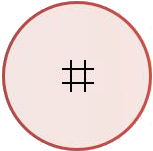

Task 2: The Keypad
Part 1: Navigating to the Keypad
To access the Keypad, place your finger on the home button, then move the finger up and a bit to the right to find the keypad. Once you hear "Keypad", tap the screen twice.
Part 2: Using the Keypad
The keypad consists of a grid of numbers from 0 to 9 similar to a house phone with physical keys. This will be used to dial the numbers you want to call. There is a mock keypad similar to the actual iPhone keypad prepared below. Feel free to explore the keypad!
Part 3: Dialling a Number
Tapping a number will prompt VoiceOver to select that number and read it out. Tapping the screen twice afterwards will key in the number. The number dialled will be displayed in a text area on top of the keypad.
Part 4: Deleting a Number
If you dialled a wrong number, you can delete it by tapping on the delete button located above number 3 on the keypad, then tapping the screen twice. Note that the delete button will only appear if there is a number, and that it will only delete from the last digit you dialled. In the actual iPhone keypad, double tapping and holding the delete button will delete everything.
Part 5: Making the Call
First, check if you dialled the correct number by tapping on the text area above the keypad, and then moving through the numbers by sliding your finger. If the number dialled is correct, tap the call button located below number 0 on the keypad, then tap the screen twice.





 Back
Back